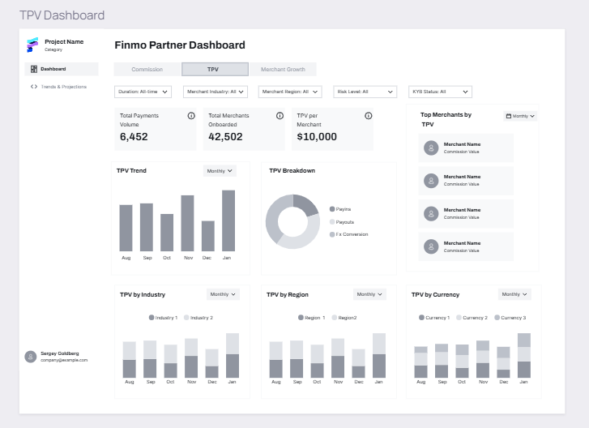

Case Study
Partner Analytics Dashboard
A self-serve dashboard for partners to understand their earnings from their commissions.
- Year
- 2025
- My role
- Product Manager
- Team
- 1 PM, 3 engineers, 1 designer, 2 CSMs, 2 Support Ops Associates
Problem Statement
Why this, why now
An increase in support tickets about commission calculation and settlements by Finmo's partner network led to the inception of this project.
Problem Statement
Breaking it down
-
01
High Support Tickets
A surge of commission-related support tickets (approx 25%) when the partner network expanded.
-
02
FinOps Overload & Inefficiency
Internal teams worked on multiple Excel sheets per partner to resolve calculation mismatches.
-
03
Partner Engagement with Finmo
The CSM team would have to raise multiple data requests for their weekly engagement call.
User Goals & Pain Points
What people needed, what was getting in the way
Goals
- Real-time updates on commission earnings
- Transparency into how commission earnings are calculated
Pain points
- No place to see overall commissions
- Import transactions into an Excel sheet to calculate earnings
Business Goals
What success looked like for the business
60–70%
reduction in support tickets
25–30%
more partner leads qualified through a more robust demo of the platform
Initial Exploration
Directions we considered
Initial Exploration
What we learned testing them
- InsightWhile most partners actively used email alerts for other payment updates (new merchant KYB, onboarding, etc.), this new alert would add more noise to their existing processes.
- InsightKey earning info being lost in email threads.
The Decision
Why we chose this direction
A self-serve dashboard
A self-serve dashboard would not only help resolve the immediate problems of operational efficiency and partner engagement, but it could also help partners unlock new opportunities by understanding their merchant network better.
The Solution
What partners see

Impact
What changed after launch
40–45
weekly support tickets eliminated across 15–20 partners
20–25 hrs/wk
saved for FinOps by eliminating manual calculations
Thank You
Questions, thoughts, feedback?
I'd love to talk through any part of this in more detail.